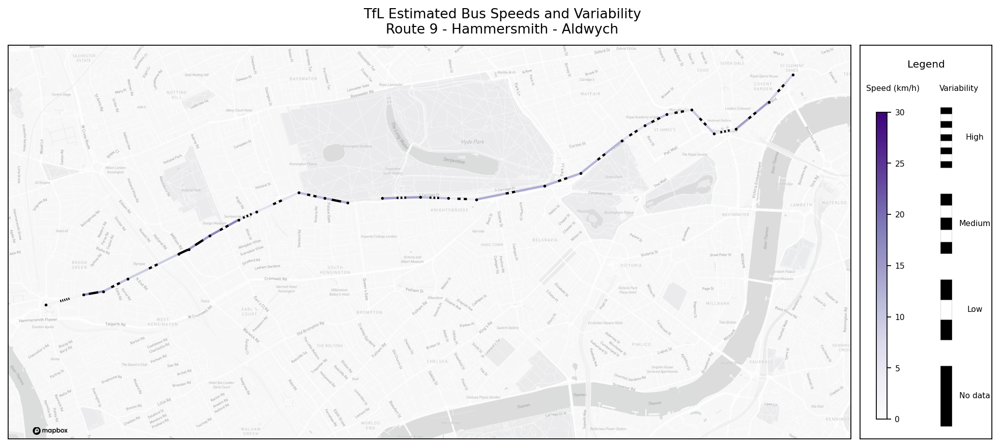

Using Mapbox for background map tiles for a bus route#
(Requires Mapbox API token)
[1]:
%load_ext dotenv
%dotenv
import pandas as pd
import numpy as np
import os
from vizent.vizent_plot import create_plot, add_lines
from scipy.stats import sem
import cartopy.io.img_tiles as cimgt
import cartopy.crs as ccrs
import matplotlib.image as mpimg
import matplotlib.text as text
import warnings
# Filter warnings for gallery image only
warnings.filterwarnings('ignore')
edge_estimates = pd.read_csv('sample-data/bus-route-estimates.csv')
stops = pd.read_csv('sample-data/bus-route-stops.csv')
mapbox_light = cimgt.MapboxTiles(access_token=os.environ['MAPBOX_API_TOKEN'],
map_id='light-v11')
transformed = mapbox_light.crs.transform_points(src_crs=ccrs.PlateCarree(),
x=stops['lon'], y=stops['lat'])
stops['transformed_x'] = [i[0] for i in transformed]
stops['transformed_y'] = [i[1] for i in transformed]
edges = edge_estimates.merge(stops[['naptanId','transformed_x',
'transformed_y']]\
.rename({'transformed_x': 'x_start',
'transformed_y': 'y_start',
'naptanId': 'start_naptanId'}, axis=1),
how='inner', on='start_naptanId')
edges = edges.merge(stops[['naptanId','transformed_x','transformed_y']].rename(
{'transformed_x': 'x_end',
'transformed_y': 'y_end',
'naptanId': 'end_naptanId'
}, axis=1), how='inner', on='end_naptanId')
vizent_fig = create_plot(use_glyphs=False,
use_lines=True,
show_legend=True,
show_axes=False,
use_cartopy=True,
cartopy_projection=mapbox_light.crs,
extent=[-0.2293, -0.1102, 51.4807, 51.5154],
scale_x=12.7,
scale_y=5.7)
vizent_fig[0].subplots_adjust(left=0.02, right=0.98, bottom = 0.05, top=0.9,
wspace = 0.02)
vizent_fig[0].dpi = 160
vizent_fig[0].suptitle("TfL Estimated Bus Speeds and Variability\n\
Route 9 - Hammersmith - Aldwych")
vizent_fig[1].add_image(mapbox_light, 14, zorder=0)
vizent_fig[1].plot(stops['transformed_x'], stops['transformed_y'],
lw=0, marker='o', color='k', markersize=1.5)
viz_df = edges.groupby(['start_naptanId', 'end_naptanId',
'distance', 'x_start', 'x_end',
'y_start', 'y_end'])['estimate_seconds']\
.agg([np.mean, sem]).reset_index()
viz_df['kmh'] = 3.6 * (viz_df['distance'] / viz_df['mean'])
add_lines(vizent_fig,
x_starts=viz_df['x_start'],
x_ends=viz_df['x_end'],
y_starts=viz_df['y_start'],
y_ends=viz_df['y_end'],
color_values=viz_df['kmh'],
freq_values=viz_df['sem'],
width_values=[2 for l in range(viz_df.shape[0])],
colormap='Purples',
color_min=0,
color_max=30,
label_fontsize=7,
legend_title='Legend',
color_label='Speed (km/h)',
frequency_label='Variability',
length_type='units',
style='set_length',
striped_length=150,
scale_dp=0,
freq_n=3)
sem_scale = []
for child in vizent_fig[0].axes[0].get_children():
if type(child)==text.Annotation:
try:
number = int(child.get_text())
sem_scale.append(number)
except:
pass
for child in vizent_fig[0].axes[0].get_children():
if type(child)==text.Annotation:
try:
number = int(child.get_text())
if number == min(sem_scale):
child.set_text('Low')
elif number == max(sem_scale):
child.set_text('High')
else:
child.set_text('Medium')
except:
pass
# Add mapbox attribution
im = mpimg.imread('_static/mapbox-logo-black.png')
imax = vizent_fig[1].inset_axes([0.0, 0.01, 0.1, 0.02])
imax.imshow(im)
imax.axis('off')
[1]:
(-0.5, 799.5, 179.5, -0.5)

© Mapbox © OpenStreetMap Improve this map
Powered by TfL Open Data. Contains OS data © Crown copyright and database rights 2016 and Geomni UK Map data © and database rights [2019]
{kind=link}